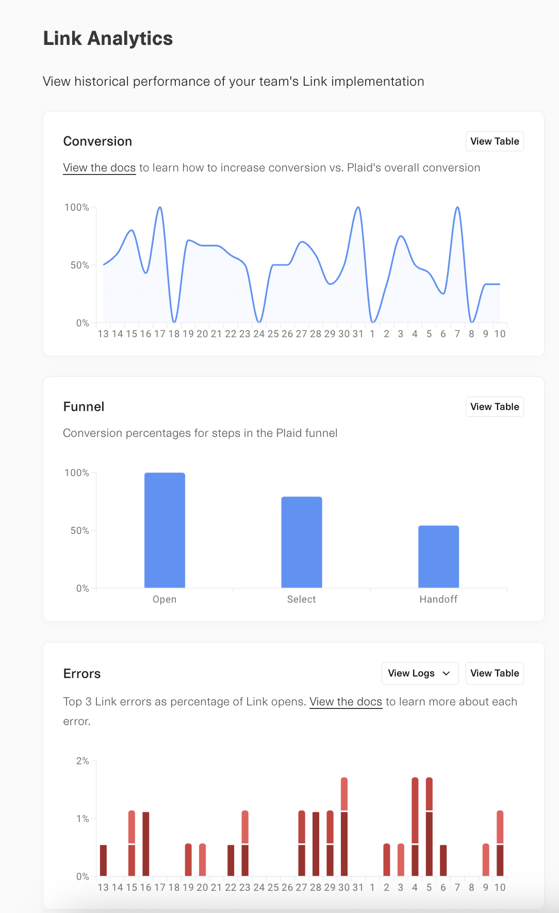
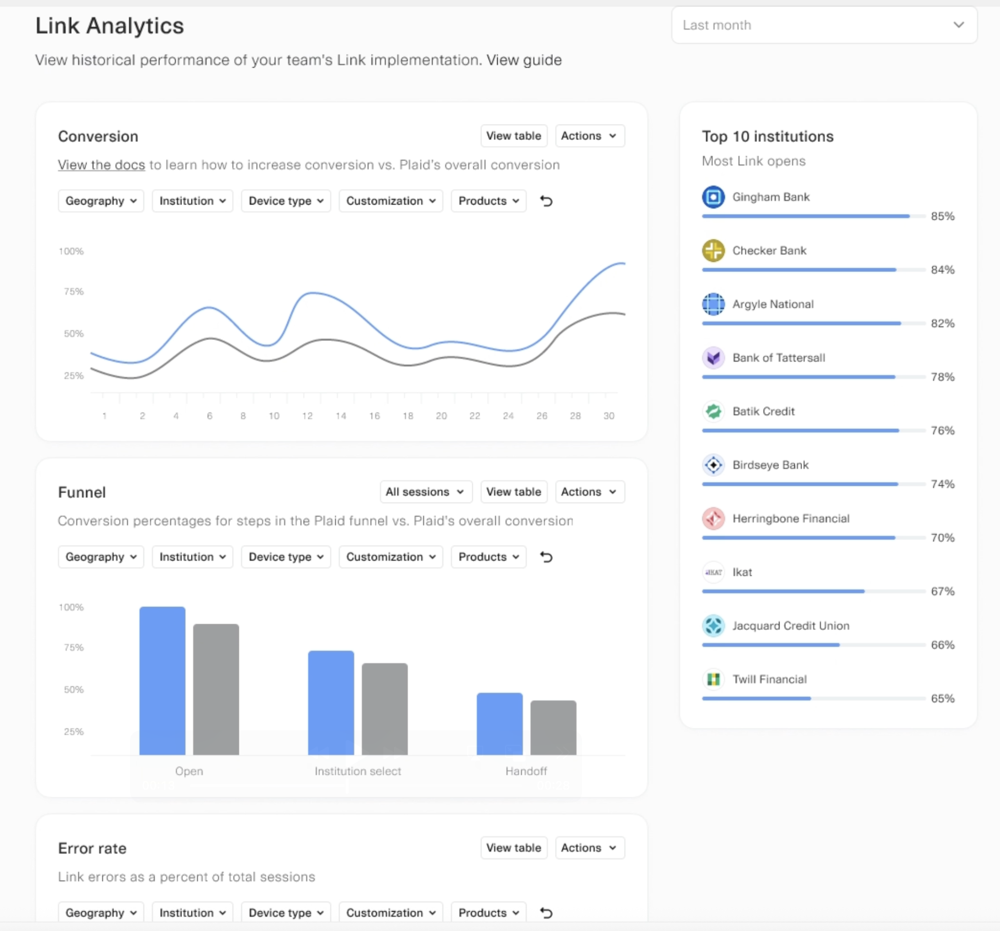

Link analytics and tracking
Learn how to understand Link analytics and measure conversion
Link Analytics
Plaid instruments the actions users can take within the Link flow, allowing you to understand and measure a user's activity in Link. Pre-packaged summary views of some of the most important analytics are available within the Dashboard.

Premium Link Analytics
Customers on Premium Support Packages have access to Premium Link Analytics, which includes the following features:
- Segment conversion performance and top errors by geography, institution, device type, product, and Link customizations
- Compare against Plaid-wide benchmarks to identify strengths and opportunities
- Review the Link funnel step by step, including key actions like
Institution SearchandSubmit Credentials - Compare OAuth vs. non-OAuth funnels
- View top Link errors as a percent of traffic
- View top 10 institutions by Link opens and their conversion performance
To upgrade to a Premium Support Package, contact your Plaid account manager.

Auth and Identity Match conversion analytics
If you use Auth or Identity Match, you can also use the Account Verification Analytics Dashboard to view more detailed product-specific analytics, including a conversion breakdown by Auth flow. This Dashboard is available at no additional charge to all Auth customers.

Link analytics via MCP
Support for Link analytics is available via Plaid's Dashboard MCP server, allowing you to analyze and interact with Link conversion data through chat or via an AI agent. For more details, see the blog post on the Plaid Dashboard MCP server and the Plaid Dashboard MCP server documentation.
Manual Link analytics
To analyze Link activity in your own analytics platform, you can log and track Link actions yourself. This can be done either by tracking user activity on the frontend via the onSuccess, onEvent, and onExit callbacks, or via the backend, using the /link/token/get endpoint.
Link events are also tracked in the Dashboard via the Developer Logs. However, the Developer Logs are designed for troubleshooting and not recommended for analytics use cases, as they cannot easily be exported to a third-party analytics platform.
This guide will go over the most important fields and events used for analytics, as well as the most popular analytics use cases. For a complete view of all user activity reporting that can be obtained from Link, see the documentation for the specific frontend platform SDK you are using (if tracking activity on the frontend) or for /link/token/get (if tracking activity on the backend).
Link analytics activity names and structures will vary slightly depending on the platform you are using. For example, events fired by the Plaid iOS SDK use lowerCamelCase (e.g. selectInstitution) while events fired by the Plaid web SDK or returned by /link/token/get use SCREAMING_SNAKE (e.g. SELECT_INSTITUTION).
Similarly, /link/token/get returns an exit object and an events array rather than firing the callbacks onExit and onEvent.
This guide will use the naming convention used by the web SDK. To see the exact naming syntax used by your platform, see the reference documentation for the specific SDK (or /link/token/get).
Tracking errors in Link
The onExit callback is called when a user exits Link without successfully linking an Item, or when an error occurs during Link initialization. If the user encountered an error in the Link flow, the error object will contain details of the most recently encountered error, including the error.error_code, error.error_type, and human-readable error.error_message.
{
error_type: 'ITEM_ERROR',
error_code: 'INVALID_CREDENTIALS',
error_message: 'the credentials were not correct',
display_message: 'The credentials were not correct.',
}The Link Analytics page in the Plaid Dashboard will show the five most common errors reported during the Link flow for your integration.
Tracking abandons in Link
The onExit callback is called when a user exits Link without successfully linking an Item, or when an error occurs during Link initialization. The metadata.status field within onExit will reflect the point of the Link flow where the user abandoned the flow, and the metadata.institution field will reflect which institution the user was attempting to connect to.
{
institution: {
name: 'Citizens Bank',
institution_id: 'ins_20'
},
status: 'requires_credentials',
link_session_id: '36e201e0-2280-46f0-a6ee-6d417b450438',
request_id: '8C7jNbDScC24THu'
}Tracking the user journey in Link
For almost every action your user takes within the Link flow, the onEvent callback will fire, allowing you to track their progress through Link. The eventName provided within onEvent typically corresponds to an action the user has taken in Link or an outcome that has occurred.
The most important event names include OPEN (the user has opened Link), TRANSITION_VIEW (the user has progressed to a new pane in Link), HANDOFF (the user has successfully completed Link), ERROR (a recoverable error has occurred in Link), and EXIT (the user has closed Link without completing it).
The event names you should track will depend on your use case and the Plaid products you use. For a complete listing of event names, see the reference documentation for your SDK (or /link/token/get).
If using Embedded Institution Search (aka Embedded Link), note that viewing the Embedded Institution Search pane will not result in any Link events or analytics activity. Only when the end user interacts with Embedded Institution Search will events appear.
Complete event activity is only available for a Link session once it has finished. Plaid does not provide the ability to track the status of an active Link session in real time. Event callbacks are not guaranteed to fire in the order in which they occurred. If you need to determine the ordering of events, sort by the timestamp field in the metadata object.
OPEN
TRANSITION_VIEW
SELECT_INSTITUTION
TRANSITION_VIEW
SUBMIT_CREDENTIALS
TRANSITION_VIEW
HANDOFFOPEN
TRANSITION_VIEW
SELECT_INSTITUTION
TRANSITION_VIEW
SUBMIT_CREDENTIALS
TRANSITION_VIEW
ERROR
TRANSITION_VIEW
SUBMIT_CREDENTIALS
TRANSITION_VIEW
ERROR
TRANSITION_VIEW
EXITView names
For a more granular view of a user's experience in Link, you can also record the metadata.viewName within onEvent. While the eventName typically reflects the action taken by the user or the result of their action, the viewName reflects the name of the specific Link pane being shown to the user, such as CONSENT (asking the user to consent to the Plaid Terms of Service) or OAUTH (informing the user that they will be handed off to their institution's OAuth flow).
Measuring Link conversion
You can view your Link conversion by viewing the Link > Analytics page in the Plaid Dashboard. If you use Auth or Identity Match, you can also use the Account Verification Analytics Dashboard to view more detailed product-specific analytics, including a conversion breakdown by Auth flow.
Alternatively, you can set up your own conversion tracking. Tracking conversion on your own is recommended if you want more detailed analytics than reported in the Dashboard (for example, to perform A/B testing on Link conversion) or to connect Link conversion to your company's analytics platform.
For tracking conversion, the most important events are HANDOFF, which indicates that the user has linked an Item, and EXIT, which indicates that the user has exited without linking an account.
Your overall conversion rate is measured as the number of HANDOFF events divided by the number of unique link_session_ids. Alternatively, you can divide by the sum total of HANDOFF and EXIT events, but this method is less accurate, since an EXIT event will not fire if a user destroys Link by quitting the browser or closing the tab. You can obtain insight into at what point a user abandoned Link by tracking the metadata.status field within onExit.
...
SELECT_INSTITUTION
TRANSITION_VIEW (view_name = OAUTH)
OPEN_OAUTH
TRANSITION_VIEW (view_name = CONNECTED)
HANDOFF...
SELECT_INSTITUTION
TRANSITION_VIEW (view_name = CREDENTIAL)
SUBMIT_CREDENTIALS
TRANSITION_VIEW (view_name = MFA, mfa_type = code)
SUBMIT_MFA (mfa_type = code)
TRANSITION_VIEW (view_name = CONNECTED)
HANDOFFYou can also capture the institution_name field, provided by the onEvent callback, to track which institutions your users are attempting to connect to.
Measuring conversion for Identity Verification
Because Identity Verification sessions trigger a unique set of events, you will need to use a slightly different method for calculating Identity Verification Link conversion, based on the IDENTITY_VERIFICATION_START_STEP, IDENTITY_VERIFICATION_FAIL_SESSION and IDENTITY_VERIFICATION_PASS_SESSION events. For details, see Identity Verification Reporting.
Analyzing conversion data
Many customers use third-party analytics platforms to analyze conversion data, which can allow you to easily view data by platform or institution. Lower conversion on a specific platform or institution may indicate an implementation problem. For example, lower conversion on mobile for OAuth-supporting institutions may indicate an issue with the handling of OAuth redirects or failure to implement app-to-app.
We recommend tracking conversion data over time to measure the impact of changes to your Link integration.
Next steps
Once you're measuring Link conversion, make sure you're maximizing it. For tips, see Optimizing Link conversion.